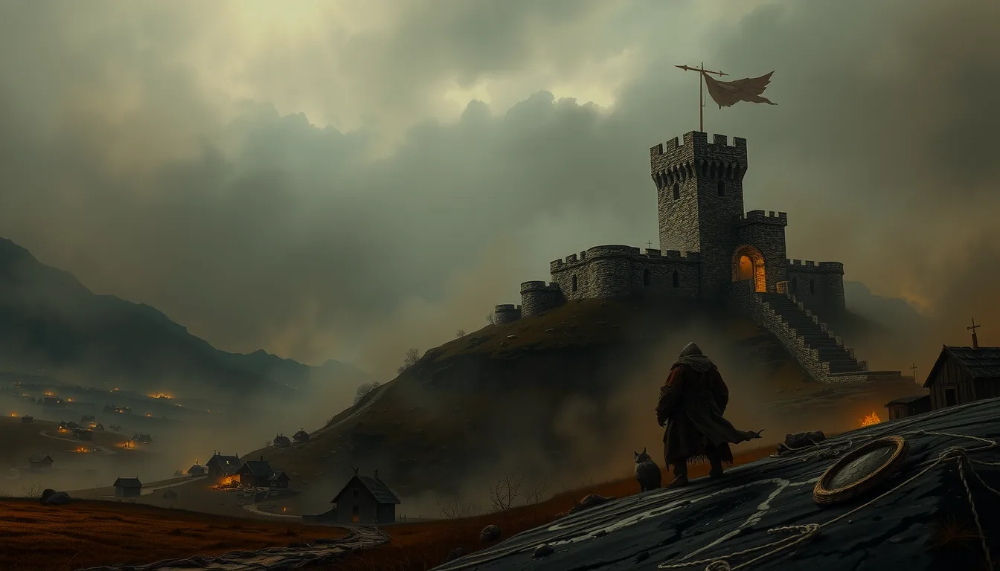
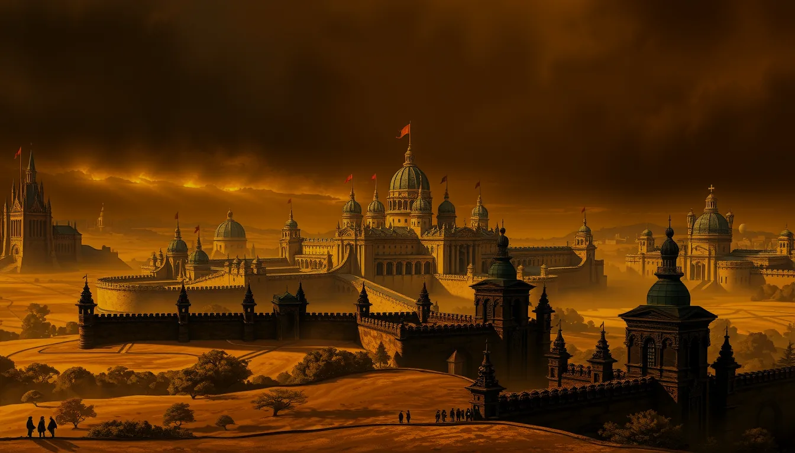
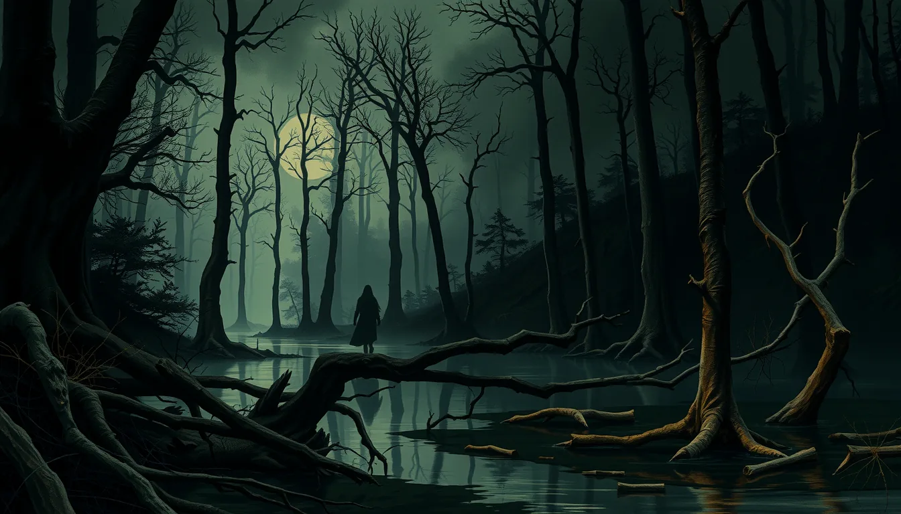
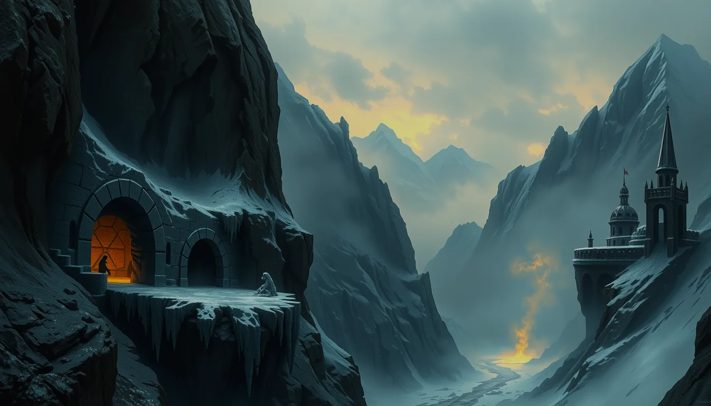
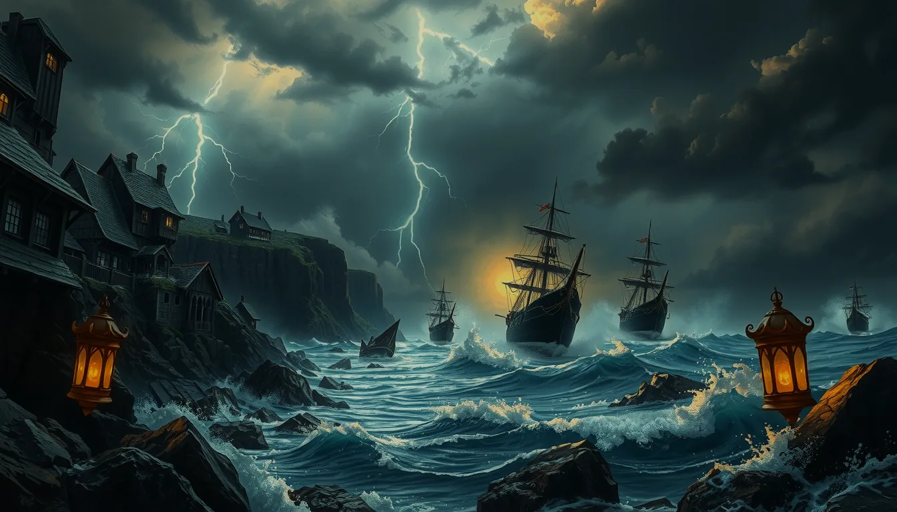
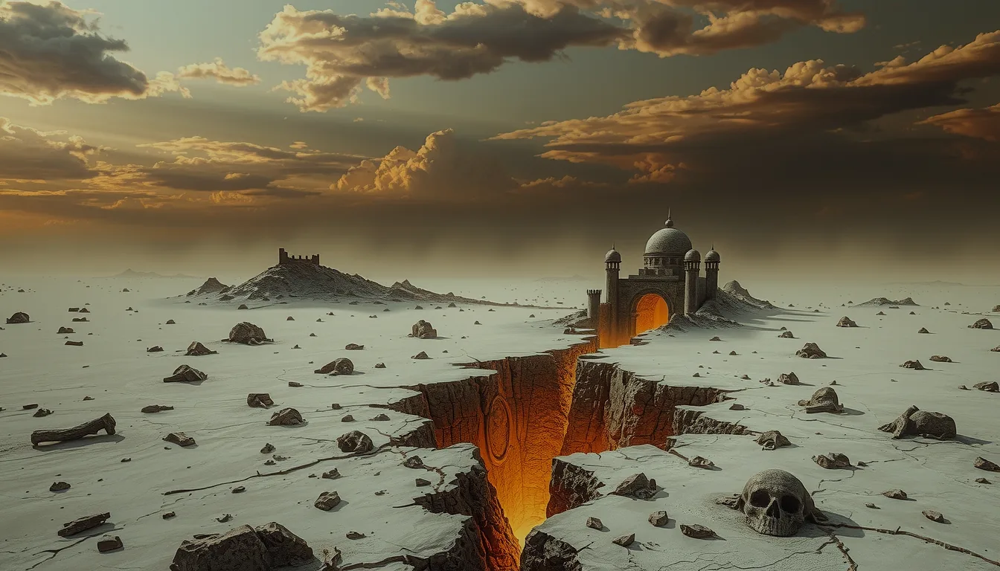

Mroczne fantasy RPG prowadzone przez sztuczną inteligencję. Rzucasz kośćmi, walczysz, podejmujesz decyzje — a opowieść reaguje na każdy twój ruch.
Droga od jednego pomysłu do żywego silnika gry — szczerze, o przełomach i decyzjach.
Czytaj kronikę →Heroic-dark kraina: sześć regionów, frakcje, pradawny Rdzeń i legendy do odkrycia.
Wejdź do świata →Wszystkie zasady gry w jednym miejscu: jak rzucać kośćmi, jak działa walka, czary i trudność zadań.
Otwórz księgę →Changelog napisany po ludzku — opowieść o tym, jak gra rośnie z tygodnia na tydzień.
Zobacz zmiany →Piszesz, co robi twój bohater — własnymi słowami. Reszta dzieje się sama.
„Skradam się za strażnika i próbuję go ogłuszyć." Pełna swoboda — mówisz, co chcesz zrobić.
Gra rzuca kością i dodaje cechy twojego bohatera do wyniku — im wyższy rzut, tym lepiej. Najwyższy możliwy wynik (20) i najniższy (1) mają szczególne konsekwencje. Wszystko rozstrzyga matematyka, nie kaprysy AI.
AI opisuje, co się stało — po polsku, klimatycznie i spójnie z całą dotychczasową historią twojej postaci.
Zdobywasz łupy, doświadczenie i nowe umiejętności. Twój bohater się zmienia — i świat razem z nim.
Tę samą grę — z całą mechaniką, kośćmi i Mistrzem Gry — możesz poprowadzić solo albo z przyjaciółmi przy jednym stole online.
Tworzysz poczekalnię i wysyłasz znajomym link. Dołączają do tej samej kampanii, tego samego świata i tej samej historii.
Rozmawiacie w trakcie gry — wiadomości do całej drużyny i prywatne szepty do jednej osoby.
Każdy gracz ma swoją kolejkę i licznik czasu na ruch. Wynik liczy mechanika, AI opisuje skutek — dokładnie jak w grze solo.
Twój bohater działa i w pojedynkę, i we wspólnych sesjach. Postęp, ekwipunek i rozwój idą razem z tobą.
Możesz dołączyć jako obserwator i śledzić cudzą sesję na żywo, bez wpływania na rozgrywkę.
Lobby, czat i walka wieloosobowa są w pełni responsywne — gracie w przeglądarce, na dowolnym urządzeniu.
Świat stygnie po upadku Pradawnych. Magia, nieumarli i groza przeciekają z pękniętego Rdzenia pod ziemią — a ty jesteś jednym z niewielu, którzy mogą jeszcze coś zmienić.

grywalneTwierdza Strażyn strzeże traktu od dwustu lat. Tu zaczyna się większość historii.

wkrótceSerce królestwa: Vilnograd, gildie, świątynia Światła. Najbezpieczniej w świecie — i najwięcej noży w plecach.

wkrótceDzicz, w której znika się bez śladu. Rdzeń jest tu blisko powierzchni.

wkrótceLód, siarka, wymarłe kopalnie. Krasnoludy odeszły — przed czym uciekły?

wkrótceMorze jako żywioł i grób. Piraci, przemytnicy i coś dużego pod falami.

wkrótceTu Rdzeń jest najpłytszy, ruiny najliczniejsze, nieumarli najgęstsi.
W tym świecie bogowie nie są dowiedzeni — czci się ich, lecz nikt ich nie widział. Prawdziwe źródło magii i grozy to Rdzeń: pradawne, pęknięte źródło mocy. Pradawni nauczyli się z niego czerpać i to ich zniszczyło. Z pęknięć przeciekają nieumarli, demony i dzika magia.
Wspólny, podskórny wróg wszystkich: nieumarli i demony rosnące w siłę przy pęknięciach Rdzenia.
Jawna władza króla kontra ukryta władza pieniądza. Każda intryga ciągnie za jeden ze sznurków.
Ci, co łatają pęknięcia, kontra ci, co je rozdzierają. Wojna o dusze pogranicza.
To nie chatbot — to gra z prawdziwymi systemami. Księga Zasad jest żywa: zawsze zgodna z silnikiem gry.
Rzucasz dwudziestościenną kością i dodajesz cechy bohatera. Im wyższy wynik, tym większa szansa sukcesu. Wynik 20 to wielki triumf — wynik 1 to spektakularna porażka.
Walczysz w zwarciu lub z dystansu. Jeden rzut decyduje, czy cios trafia — pancerz zmniejsza otrzymane obrażenia.
Czary kosztują manę i mają różne poziomy mocy. Każde zaklęcie niesie ryzyko — im potężniejsze, tym niebezpieczniejsze w użyciu. Krasnolud-uczony ma własną, surowszą odmianę: Rdzeń-magia, mocniejsza, ale bardziej ryzykowna.
Twój bohater ma siedem cech określających, w czym jest dobry. Każde zadanie ma swoją trudność — od banalnego po legendarny wyczyn.
Świat odkrywasz heks po heksie — mgła wojny ustępuje tam, gdzie byłeś. Wybierasz trakt albo skróty przez dzicz, rozbijasz obóz, a długi marsz kosztuje zmęczenie.
Kraina pamięta twoje czyny: dobra sława daje zniżki u kupców i przychylność NPC, zła — narzuty i wrogość. Bohater żyje dłużej niż jedna przygoda.
Najczęstsze pytania i to, dokąd zmierza projekt.
Mrocznym fantasy RPG, w którym Mistrza Gry zastępuje sztuczna inteligencja — pełna gra z systemami, nie zwykła rozmowa z chatbotem.
Tak — cała narracja, mechaniki i interfejs są po polsku.
Jedno i drugie — solo albo wspólna sesja multiplayer tym samym bohaterem.
Droga od jednego pomysłu do żywego silnika gry — jak zmieniała się idea i podejście do mechaniki.
Pomysł: Mistrz Gry, który nigdy nie śpi i prowadzi prawdziwą grę, nie tylko rozmowę.
Realne d20, cechy, walka strefowa — gra z systemami, nie wrapper na czacie.
Magia uczonego, lochy kafelkowe, wspólne sesje — świat zaczął żyć.
Interaktywna Księga Zasad i spójne lore heroic-dark świata.
Nowa mechanika, nowa kraina, nowy tryb — dostaniesz info jako pierwszy. Bez spamu.